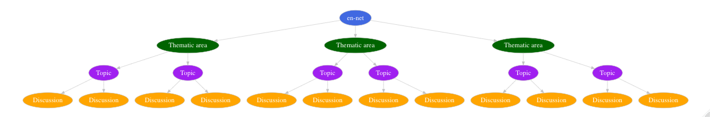

ennet: Utilities to Extract and Analyse Text Data From the Emergency Nutrition Network (en-net) Forum 
en-net is the go to online forum for field practitioners requiring prompt technical advice for operational challenges for which answers are not readily accessible in current guidelines. The questions and the corresponding answers raised within en-net online forum can provide insight into what the key topics of discussion are within the nutrition sector. This package provides utility functions for the extraction, processing and analysis of text data from the online forum.
What does ennet do?
The ennet package has two key sets of functions:
The first set of functions facilitates the extraction of text data from the en-net online forum.
The second set of functions supports the analysis of the extracted datasets to produce summary measures and statistics of the en-net online forum.
Installation
You can install the released version of rennet from CRAN with:
install.packages("ennet")You can install the development version from GitHub with:
Usage
The ennet data extraction workflow
ennet package provides a set of functions that extracts information from the en-net online forum. This set of functions was built on top of the rvest package which provides robust and performant web scraping functions and the dplyr package which provides a full suite of data manipulation functions. The ennet package was designed to be able to interact with how the en-net online forum has been structured.
en-net website structure
The en-net online forum website has a very clear and clean structure. The opening page is a list of thematic areas which are linked to each of their respective webpages. In each of these thematic area webpages is another list, this time a list of topics raised within the thematic area. These topics are the text that an online user provides as the title for the question she/he is going to ask. Each of the topics are then again linked to their respective webpages that show the actual full question raised and the ensuing responses and discussion stemming from that question.

Based on this structure, the following functions are available from the ennet package for extracting text data:
get_themes- function to get a list of thematic areas in the forum;get_theme_topicsandget_themes_topics- functions to get list of topics for a specific thematic area or thematic areas; and,get_topic_discussionsandget_topics_discussions- functions to get list of discussions for a specific topic or topics,
The general data extraction workflow codified by the ennet package is as follows:
## Step 1: Get the en-net forum themes
themes <- get_themes()
## Step 2: Get the en-net topics from each theme
topics <- get_themes_topics(themes)
## Step 3: Get the en-net discussions per topic per theme
discussions <- get_topics_discussions(topics)
## Show discussions data
discussionsThe ennet package functions have been designed to allow for pipe operations to be performed. The data extraction workflow can be implemented using piped operations as follows:
get_themes() %>% ## Step 1: Get en-net forum themes
get_themes_topics() %>% ## Step 2: Get en-net topics from each theme
get_topics_discussions() ## Step 3: Get en-net discussions per topic
## per themeFor a more detailed discussion of the data extraction workflow via the ennet package, read Utilities to Extract Text Data from en-net.
The ennet analytics functions
The ennet package also includes analytic functions that summarises the text data available from the en-net online forum. Currently, there are four analytic functions available from ennet:
count_topics- function to count the number of topics or questions by theme and date;count_authors- function to count the number of topics attributed to a specific author;arrange_views- function to arrange topics by number of views; and,arrange_replies- function to arrange topics by number of replies.
For a more detailed discussion of the analytics functions available from the ennet package, read Summarising en-net online forum statistics.
Utilities and datasets
In addition to these two sets of key functions, ennet package also includes a function - update_topics - that extracts the en-net online forum dataset and updates it at a given time interval. This is a convenience wrapper function to get_themes_topics that is potentially useful for those who wants to build dashboards or applications that uses data from the en-net online forum.
Two datasets are also included in the en-net package. The first dataset is a data.frame of en-net online forum themes and the second dataset is a data.frame of en-net online forum topics.
Practical applications
The en-net online forum is a rich resource for understanding the community of users that participate in it. And given how an online forum is designed, that resource can be tapped relatively easily given that the documentation of the interaction and discussion between its users happens in real-time. The ennet package facilitates the access to that information through the statistical analysis tool R with which further levels of analysis can be applied to generate meaningful and valuable understanding of this specific community and to some extent the greater nutrition sector at large.
Following are a few practical and meaningful applications of the information generated by the en-net online forum.
Assess effectiveness of the en-net online forum
The data from the en-net online forum can be used to assess effectiveness of the forum. Effectiveness can be defined as whether the forum has been able to achieve its stated aims/objectives when it was started. Effectiveness can also be expressed in terms of indicators or metrics that reflect overarching principles, ideals or values that those who started the forum adhere to or that the community of users and the wider sector or society believe in. These may include values of inclusion, participation, scientific rigour among others. Given that the forum has been in existence for many years now, information is available over the same period allowing for assessing temporal variation in effectiveness (as defined). This application is a more normative approach and will involve creating or developing metrics or taking relevant metrics from other sectors and applying those to this case.
Identify gaps in information, knowledge and/or skills
Given the nature of the en-net online forum as a quick point of recourse for field practitioners to seek answers to practical questions and challenges faced, it can be expected that the data from the forum contains information on what these topics are. These information can then be used to identify most common or most important information, knowledge and skills that have been asked about. By identifying these gaps in information, knowledge and/or skills and by understanding the evolution of these needs over time, we can potentially predict training needs in the near term and over time. This application is a more formative approach in that we let the data tell us what information it holds.
Disclaimer
The ennet package is an independent development and is separate from and not recognised and approved by the Emergency Nutrition Network (ENN), the organisation that runs and moderates the en-net online forum. The author and maintainer of this package is not affiliated with ENN but is committed to ensuring that the ennet package is compliant with en-net online forum’s terms of use.
Any mistakes, problems and issues with the functionality and outputs of the ennet package are that of the author and maintainer of the package and not of Emergency Nutrition Network (ENN). Hence any problems and issues to the usage, functionality and outputs of the ennet package should be addressed directly to the author and maintainer here.
Community guidelines
Feedback, bug reports and feature requests are welcome; file issues or seek support here. If you would like to contribute to the package, please see our contributing guidelines.
Please note that the ennet project is released with a Contributor Code of Conduct. By contributing to this project, you agree to abide by its terms.